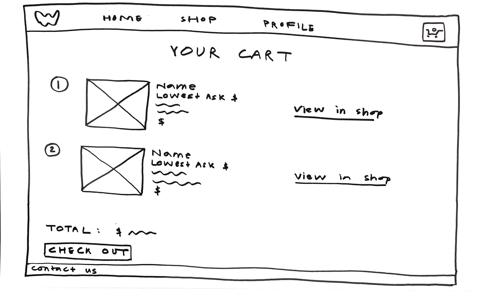
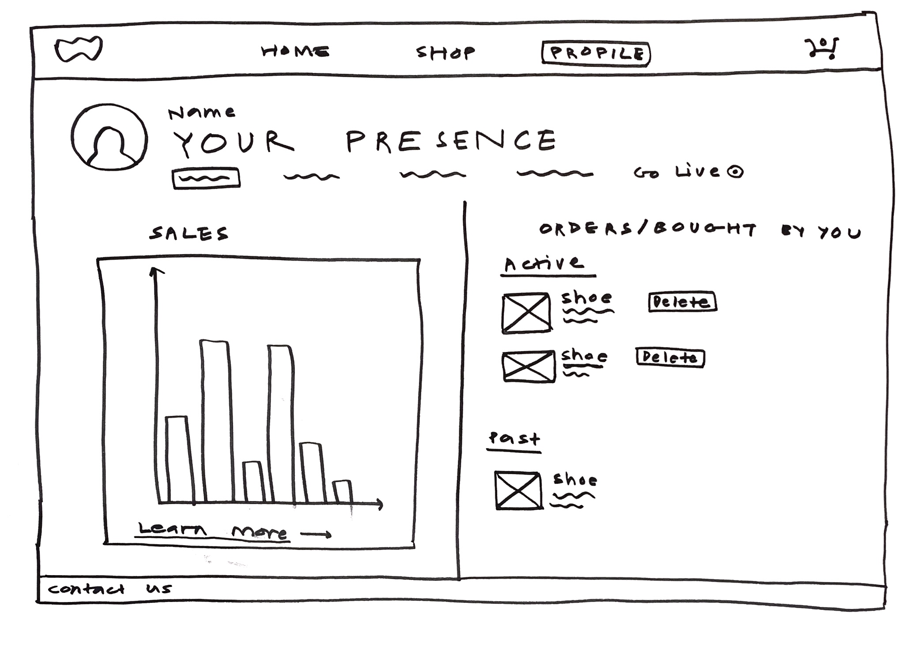
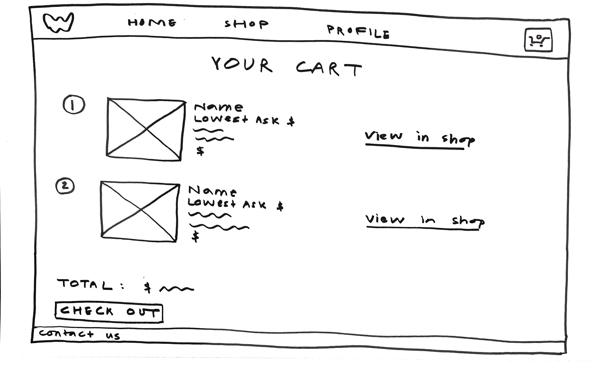
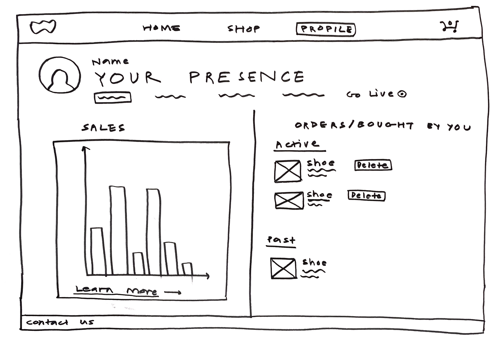

| Original Hi-Fi |
Critique |
Final Hi-Fi |
| The image of shoes on the home screen took up the whole screen. |
- Didn't realize there was more content below it.
- Needed some indication that a user can scroll down.
|
Added downwards arrow at the bottom of the image to indicate that users can scroll. |
| Red dot and words 'Live Now' indicated which items currently had a live auction going on (in Browse screen). |
- Users thought that 'Live Now' indicated live listings, not auctions.
- Users wondered why only some items had that tag.
|
- Changed 'Live Now' to 'Live Auction Now'.
- Added a Listing Type filter to emphasize the difference between Live Auction and Buy Now items.
|
| 'Sell' tab in the the header menu led to the Listings page in the user profile. |
- Users expected 'Sell' tab to lead to a 'create listing' page.
- Users felt a step was being skipped by coming directly to the Listings page.
|
- 'Sell' in the header menu now leads to a different page which has buttons for the main actions related to selling - creating and managing listings.
- The Manage Listings in the new Sell page button leads to the Listings page.
|
| The Listings page had both Current Listings and Unlisted items on it. |
- Users weren't sure what 'Unlisted' meant.
- Current Listings and Unlisted should have their own pages, because of their different related actions (e.g., unlist vs. list).
|
- Changed 'Unlisted' to 'Drafts', which is more intuitive.
- Made separate pages for Current Listings and Unlisted items (now called Drafts).
|
| The buttons to add a new listing or draft were located in a horizontal bar of buttons underneath the respective item displays. |
- Buttons, especially Add New, should be more visible since they hold the main functionality of the page.
- Buttons easy to miss if the user didn't scroll down.
|
- Moved most buttons to a side panel, making them immediately visible.
- Added a larger, more pronounced Add New button (box with plus sign).
|
| Inventory management options included 'List' and 'Unlist'. |
Users were confused about what 'Unlist' would do. |
- Added information icons next to buttons and headings that might require explanation or instructions.
- User is meant to hover over the icon - hover not implemented in this prototype.
|
| Side list of tabs in Profile just had a few main tabs. |
Hierarchy within the profile was unclear to some users. |
- Restructured profile organization with more descriptive tabs.
- Selling-related tabs under Selling dropdown.
- Added a 'Buying' dropdown since sellers on the site can also buy.
|


 


